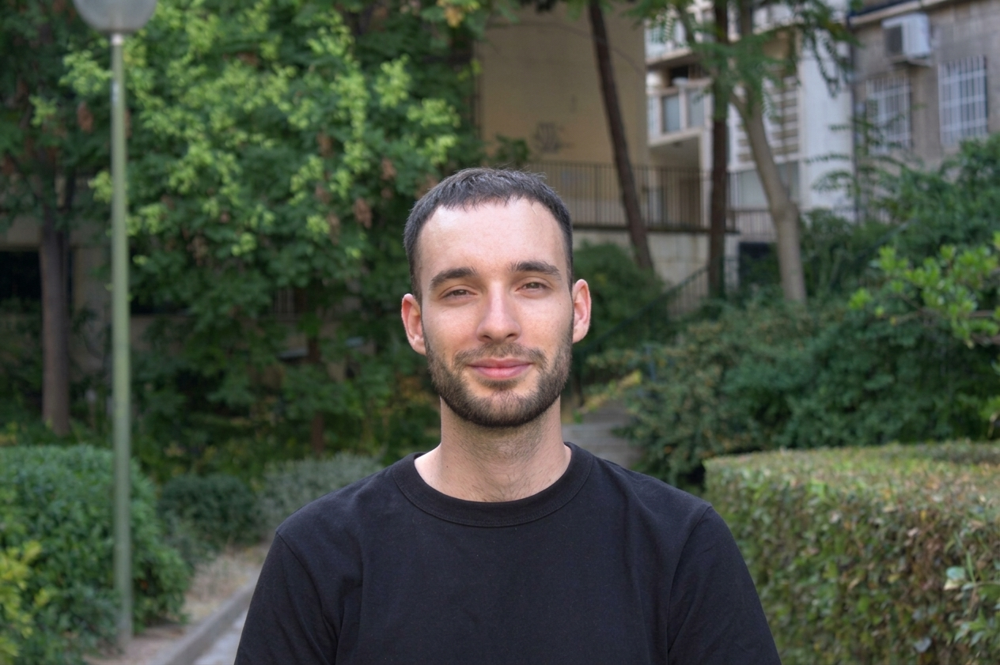

Hola ¡soy Marco!
Soy estudiante de diseño, actualmente cursando el último año de la modalidad de diseño gráfico en la Escuela Superior de Diseño de Madrid.
Me encanta desarroyar nuevos proyectos, sobre todo si son creativos y me permiten investigar y aprender.
También me gusta vivir nuevas experiencias y conocer otras culturas, por ello decidí cursar un semestre Bruselas como parte del programa Eramus
Estoy interesado en el arte, la cultura, el cine, la literatura y la ilustración. La experiencia en estos ámbitos me ha enseñado a construir una narrativa solida y desarroyar conceptos con coherencia para transmitir un mensaje adecuado.
Para mi es importante tener buena relación con mis compañeros y aprender de las personas con las que trabajo.
Mi sueño es convertirme en director creativo y poder llevar a cabo proyectos interdisciplinares que impliquen diferentes enfoques artísticos.
Experiencia
Creador de contenido para redes sociales
Asemas (Madrid, España) 2024-2025
Creador de contenido y corresponsal para el blog Erasmus en Flandes
Oficina oficial de Turismo de Flandes y Bruselas
Live visuals para evento de moda
ESD Show, Madrid Fashion week 2026
Logros
2026 Ganador de concurso de diseño de cuaderno
Dirección General de Enseñanzas Artísticas de la comunidad de Madrid
Estudios
Título de Bachiller en Artes Gráficas
I.E.S Isabel la Católica
Técnico Superior en Artes Plásticas y
Diseño,
especialidad en Modelado Industrial (pendiente de proyecto final)
Escuela de Artediez
Cursando el Grado en Diseño Gráfico
Escuela Superior de Diseño de Madrid
Graphic Storytelling intership (programa de erasmus)
Luca school of Arts
Bruselas, Bélgica
Herramientas
Paquete Adobe: indesign, after effects, illustrator, photoshop etc.
Figma
Blender 3D
Visual studio
Idiomas
Español: nativo
Inglés: nivel B2
Italiano: intermedio
¿hablamos?
marcomoyanog@gmail.com